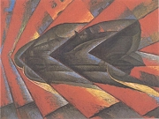
Russolo: Dynamika automobilu
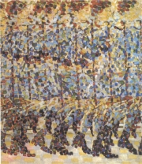
Balla: Dívka běžící po balkóně
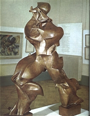
Boccioni: Jednotné tvary kontinuity v prostoru
|
FUTURISMUS
Futurismus založil roku 1909 Ital Marinetti, o rok později se k němu přihlásili i někteří ruští umělci. Jak napovídá název tohoto avantgardního směru, obraceli se futuristé k budoucnosti (futurus) a odmítali tradiční formy i témata. Z futuristických děl čiší optimismus a nadšení pro vše nové. Opěvují se v nich technické vynálezy, civilizační výdobytky, rychlost a pohyb. Futuristé přímo chrlili nejrůznější manifesty a programové letáky. Jejich nové umělecké postupy přiblížily literaturu výtvarnému umění. Marinetti přišel s koncepcí osvobozených slov. Skládal k sobě slova bez ohledu na větnou skladbu a správné pády, přestal používat interpunkci a básnické přívlastky, slovesa psal v infinitivu, text doplňovaly grafické značky, výtvarné prvky atd. Tyto výdobytky přijaly i další avantgardní –ismy.
Zatímco italští futuristé tíhli k fašismu, ruští stoupenci tohoto směru se přihlásili ke komunistické ideologii, obzvláště Vladimir Majakovskij. Velemir Chlebnikov obohatil futuristickou literaturu o zaumný jazyk plný nových zvukomalebných slov.
Futurismus se prosadil také ve výtvarném umění – Manifest futuristického malířství. K nejvýraznějším osobnostem patří Italové Umberto Boccioni, Luigi Russolo, Gino Severini nebo Giacomo Balla a Rusové Jurij Rožkov nebo Natálie Gončarovová. Tito umělci se snažili hlavně o vyjádření pohybu. Balila Pratella je autorem manifestů futuristické hudby. Za futuristu (kubofuturistu) bývá považován také francouzský spisovatel Guillaume Apollinaire.
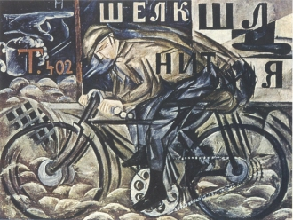
Gončarovová: Cyklista
|
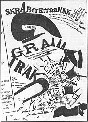
Marinetti: Bitva v devíti poschodích na Mont Altissimo
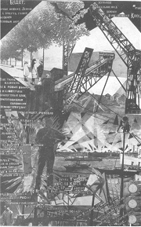
Rožkov: Kurským dělníkům... (fotomontáž k Majakovského básni)
Zjisti přesný význam slov futurum, futurolog a futuristický.
Kdo byl Ferenc Futurista?
|
Filippo Tommaso Marinetti (1876-1944)
Ital Marinetti se narodil v egyptské Alexandrii a studoval v Paříži. Proslul jako zakladatel futurismu a autor mnoha manifestů. Jeho názory byly značně kontroverzní. V pojednání Válka, jediné ozdravění světa propagoval militarismus a v článcích Futuristická demokracie nebo Futurismus a fašismus se přihlásil k italským nacionalistům a Mussolinimu. Je autorem básnických sbírek Osm duší v bombě nebo Osvobozená slova a dramat Ohnivý buben či Zajatci.
|
Filippo Tommaso Marinetti: Technický manifest futuristického písemnictví
Marinetti zveřejnil první Manifest futurismu roku 1909 v pařížském Figaru. Brzy následoval nespočet dalších programových statí – Zabijeme jas měsíce, Technický manifest futuristického písemnictví, Rozhlasová imaginace a osvobozená slova, Divadlo varieté atd.
|
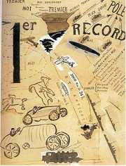
Marinetti: Osvobozená slova
Jaké jsou základní myšlenky Marinettiho manifestu?
Co si myslíš o technice osvobozených slov? Dokážeš napsat futuristickou báseň?
|
Velemir Chlebnikov
(1885-1922)
Ruský futurista Chlebnikov proslul jako tvůrce tzv. zaumného jazyka. Zajímal se o slovanskou mytologii a utopické projekty nových státních zřízení. Byl to nepraktický a do sebe uzavřený samotář, který platil za roztržitého podivína. Těžce nesl, když musel narukovat na frontu. Při tažení Rudé armády na Teherán dostal sněť a zemřel na sepsi. Napsal řadu básnických sbírek, poém, dramat i prozaických textů, které dosud nebyly přeloženy do češtiny. S Majakovským napsal futuristický manifest Políček veřejnému vkusu.
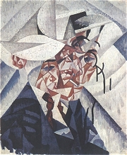
Severini: Autoportrét
|
Zaumný jazyk Velemira Chlebnikova
Chlebnikov si vytvořil vlastní tzv. zaumný jazyk – vymýšlel nová zvukomalebná slova, vytvářel originální odvozeniny, oživoval slova dávno zaniklá nebo pátral po zajímavých výrazech v jiných slovanských jazycích. Jeho slovotvořičství nebylo samoúčelné. Nová slova měla podle Chlebnikova přímo navozovat konkrétní smyslové pocity, někdy jejich význam dodatečně čtenářům vysvětlil. Tvořil také tzv. dvousečné básně složené z palindromů.
|
Kterým slovům v Chlebnikovových básních nerozumíš?
Pokus se vysvětlit význam jednotlivých zaumných slov.
Co je autorské slovo?
Víš, co je palindrom? Zkus nějaký vymyslet.
Napiš zaumnou báseň.
Proč se Chlebnikovova poezie obtížně překládá?
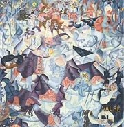
Severini: Dynamický hieroglyf v Bal Tabarin
Vymysli podle Chlebnikovova vzoru nová slova a použij je v krátkém textu, který opatříš vysvětlivkami.
Připomíná ti Chlebnikovova tvorba nějaké starší autory? Které? Čím se od sebe navzájem odlišují?
|
Vladimir Majakovskij
(1893-1930)
Ruský básník Vladimir Majakovskij byl už v 15 letech třikrát vězněn za ilegální propagaci sociálně demokratické strany. Podporoval bolševický převrat a dal své umění do jeho služeb – divadelní hra Mystérie-buffa, báseň Levý pochod, poéma 150 000 000, satiry Okna Rosty nebo básnická skladba V.I.Lenin. Navíc pracoval v Ruské telegrafní agentuře jako malíř a textař agitačních plakátů. Vrcholem jeho tvorby jsou poémy Oblak v kalhotách, Miluji a O tom nebo dramata Štěnice a Horká lázeň. Svůj život ukončil sebevraždou.
|
Majakovského verše
Majakovskij rozbil verš na krátké úseky, které graficky připomínají schody. Ty čtenáře nutí, aby přizpůsobil tempo a způsob recitace složitému členění básně. Majakovského skladby tak působí velmi dynamicky. Někdy je doprovázel ještě vlastními kresbami. Své umění dal bohužel do služeb sovětské propagandy.
|
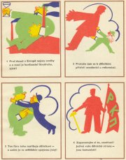
Majakovskij: Okno Rosty č. 539
Jak se ti líbí Majakovského verše a kresby?
|
Internetové stránky
Futurismus
Futurismus
Marinetti: Bitva
Marinetti: Dopis „passéistického" pána mladé krasavici
|
Doporučená četba
Copplestone, Trewin: Moderní umění, přel. M.Černá, SNKLU, Praha 1965
Crémieux, B.: Panorama soudobé literatury italské, Praha 1930
Hajný, Josef: Panoráma italského futurismu, IN: Světová literatura č. 5-6/1969
Chebnikov, Velemir: Čmáranice po nebi, přel. J.Taufer, Odeon, Praha 1974
Chebnikov, V.: Všem, přel. J.Taufer, Odeon, Praha 1985
Chebnikov, V.: Zakletí smíchem, přel. J.Taufer, Československý spisovatel, Praha 1975
Konečný, Dušan: Futurismus, Odeon, Praha 1974
Majakovskij, Vladimir: Výbor díla ve dvou svazcích, přel. J.Taufer, SNKLHU, Praha 1953
Marinetti, Filippo Tommaso: Osvobozená slova, Praha 1922
Spisy Vladimira Majakovského (10 svazků)
Teige, Karel: Futurismus a italská moderna, IN: Svět stavby a básně, Praha 1966
|
Vypracuj písemný referát o některé z uvedených knih.
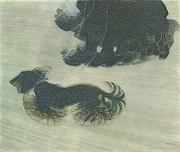
Balla: Pes na šňůře
|
|